☰
Oil & gas pipelines, construction and industrial works, and city infrastructure delivered across Syria.
Civil works were completed for a 25-kilometer gas pipeline in the Al-Sukhnah area, extending from the wells to the stations. This included excavation, backfilling, and road construction. Civil works were also completed for a 250-kilometer oil pipeline in Al-Hasakah, Qamishli, Al-Jabsah, Sheikh Hilal, and Al-Akrashi.
The implementation of a fiber optic cable project for the Damascus Telecommunications Corporation, from Palmyra to Damascus, a distance of 180 kilometers, in 2005, included excavation, backfilling, and cable laying works.
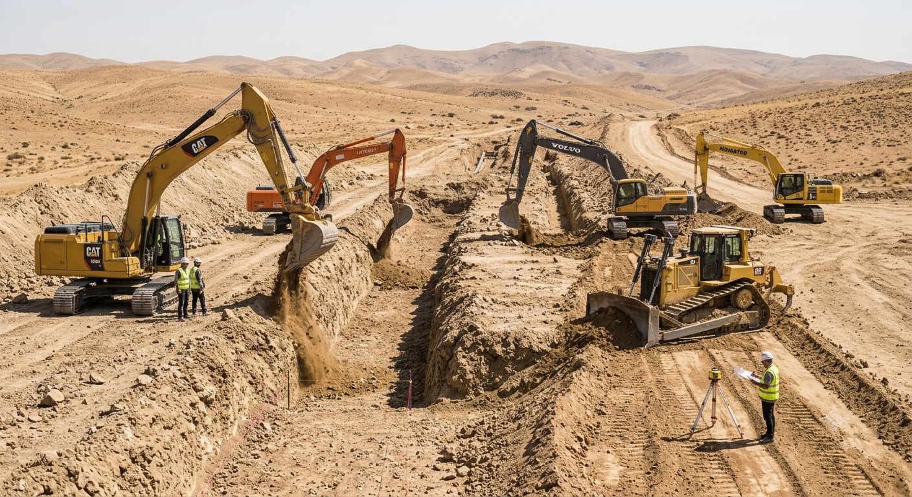
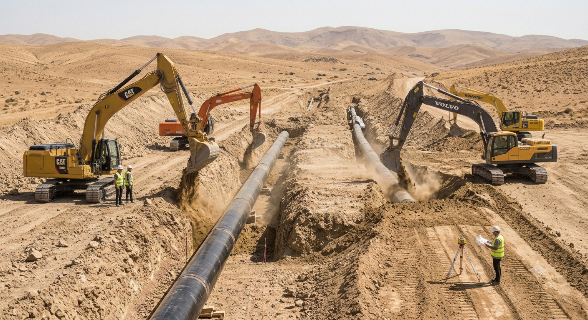
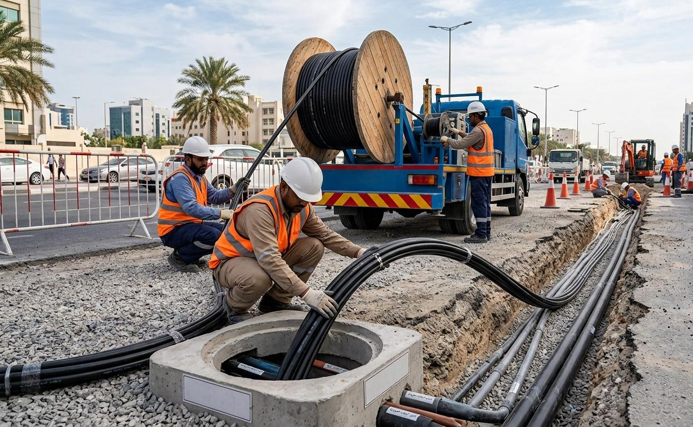
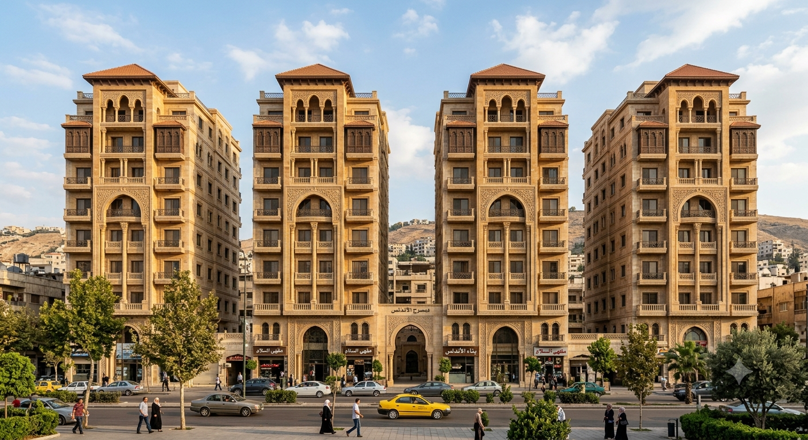
The project included 80 residential apartments in 4 buildings, each consisting of 5 floors, in Homs Al-Waer in 2003.
Client: Housing Savings CompanyExecution of specialized excavation works for several industrial factories and prefabricated steel structures.
Client: Industrial City of HomsThe first phase of the Gardenia Tower project was completed in 2008. This phase included excavation work and lateral soil reinforcement using anchors and tie beams, in addition to reinforced shotcrete to a depth of 18 meters and an area of 8000 square meters, and the installation of lateral piles with a diameter of 80 cm. These works were carried out according to the highest standards.
Client: CONSER Syria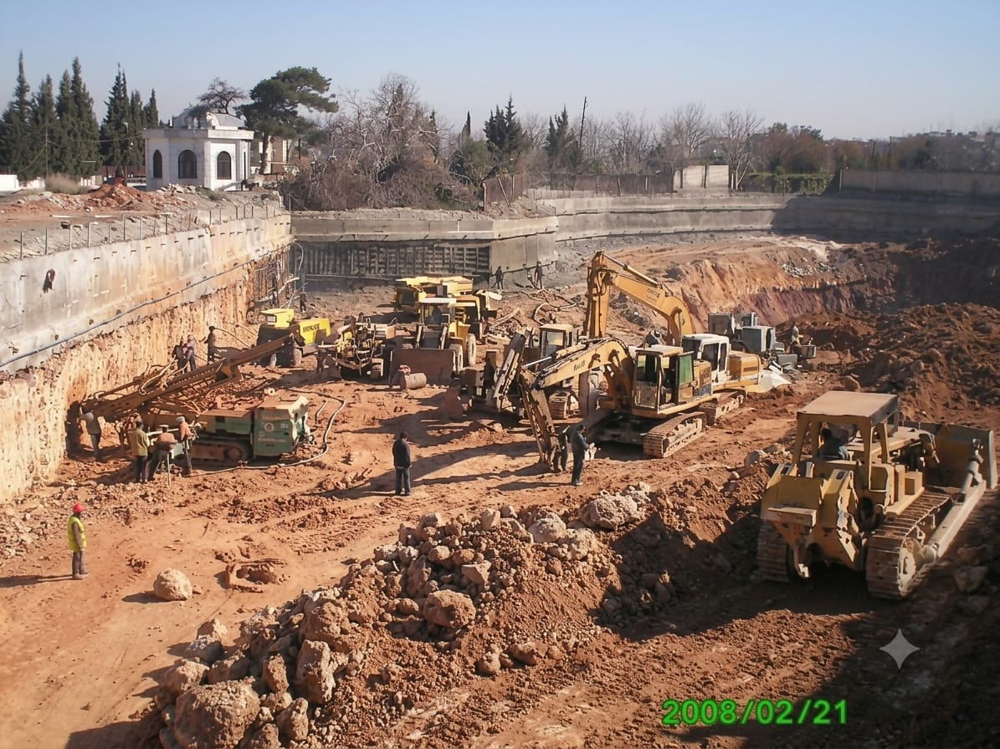
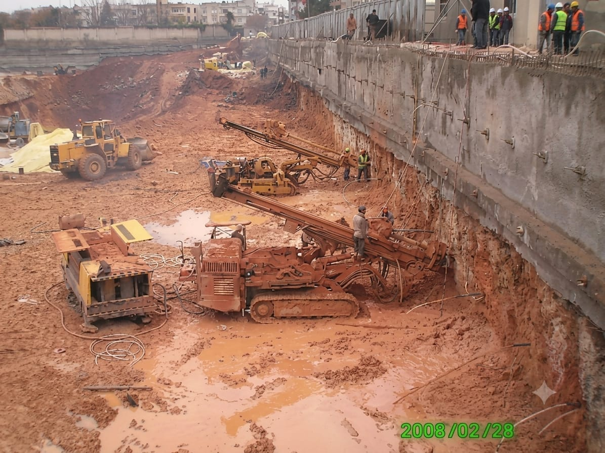
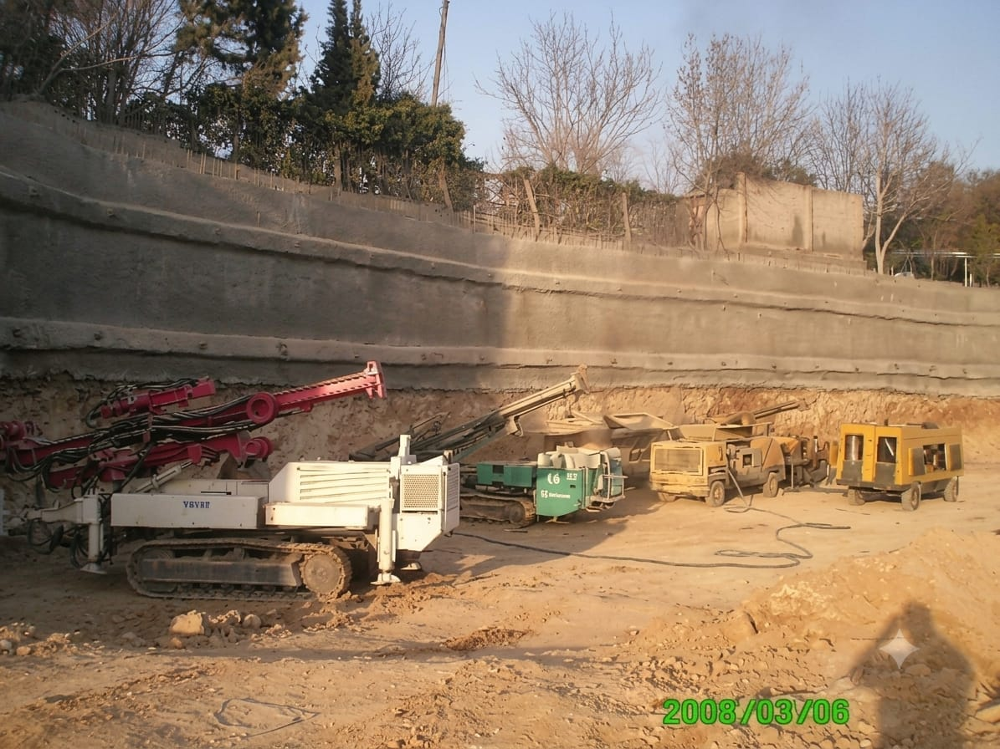
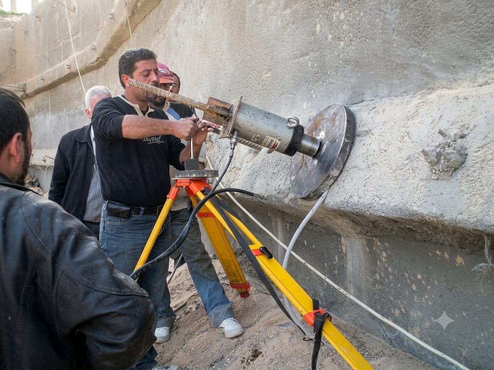
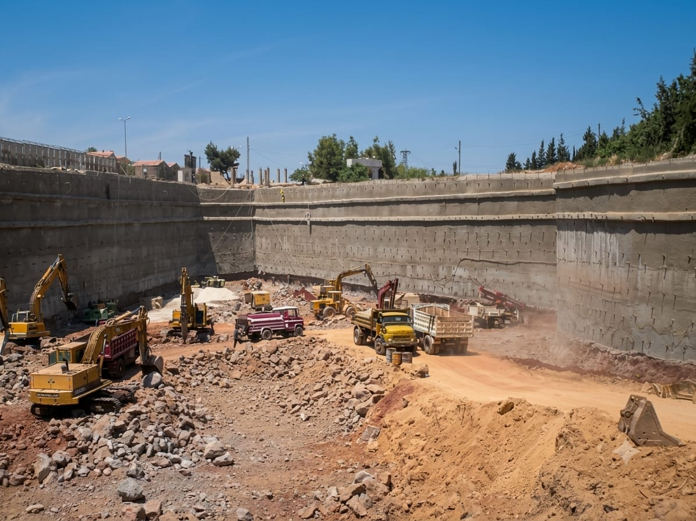
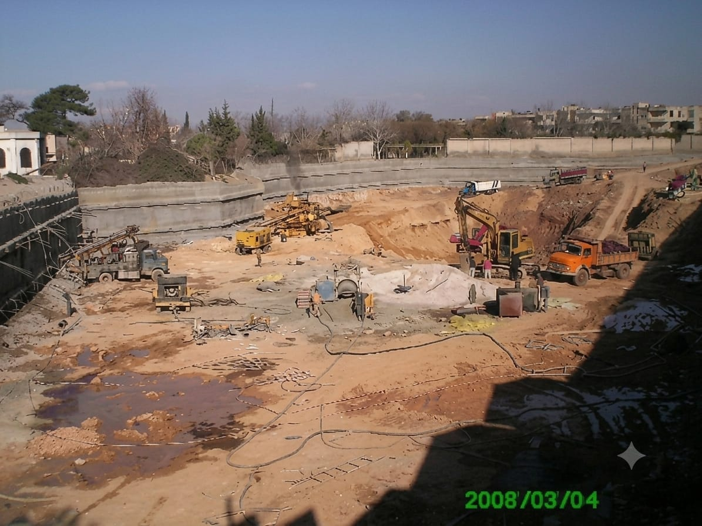
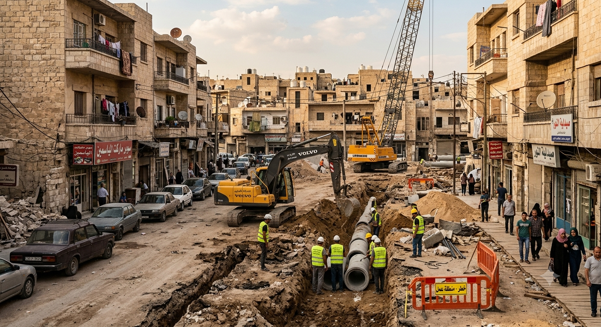
Execution of sewage and stormwater drainage networks throughout Homs City, with pipe diameters ranging from 200 cm to 50 cm.
Client: Homs Public Water and Sanitation Establishment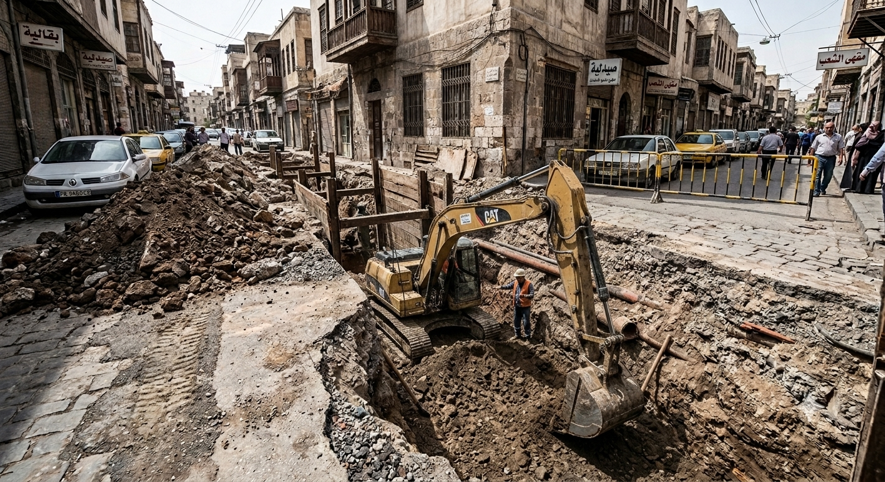
Execution of a complete infrastructure project in Baba Amr.
Client: Homs GovernorateIncluded sewage works and road asphalt paving.
Client: Homs Governorate